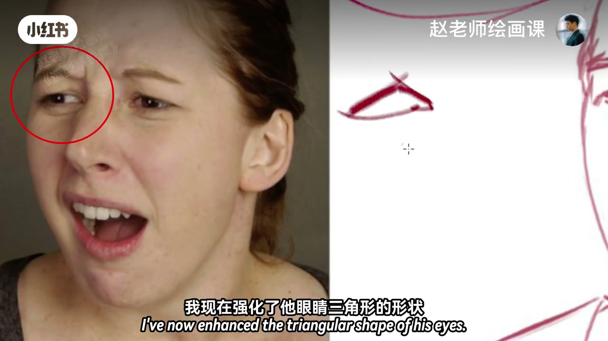
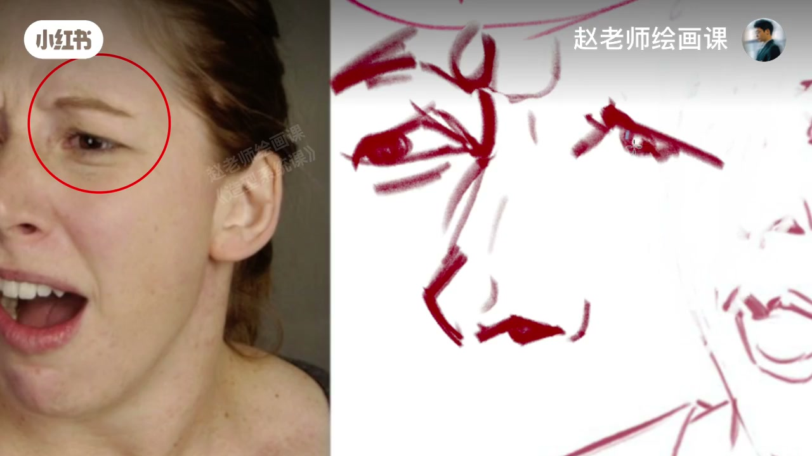
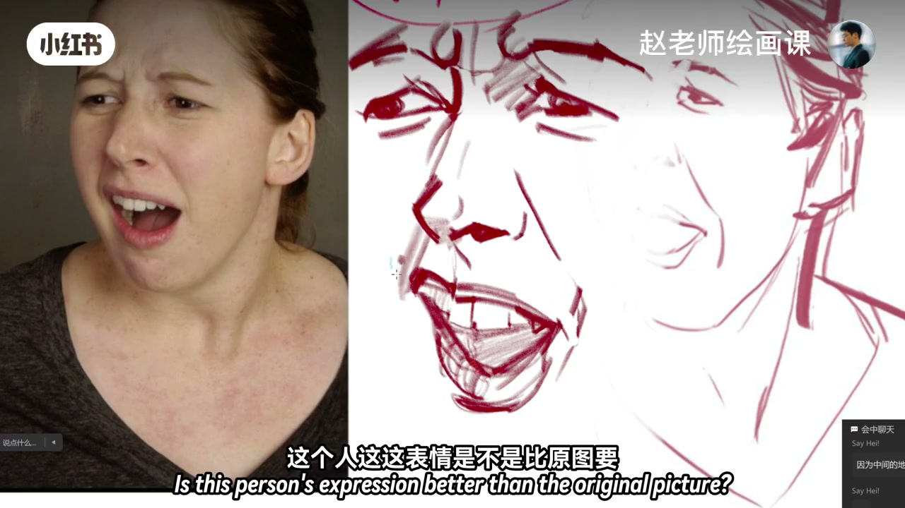
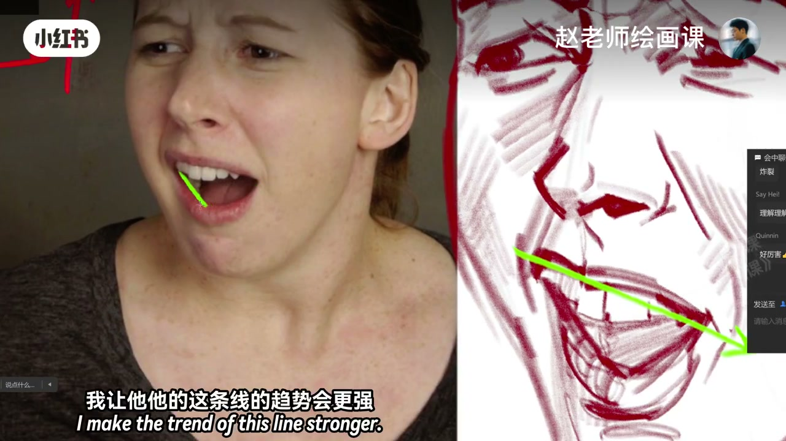
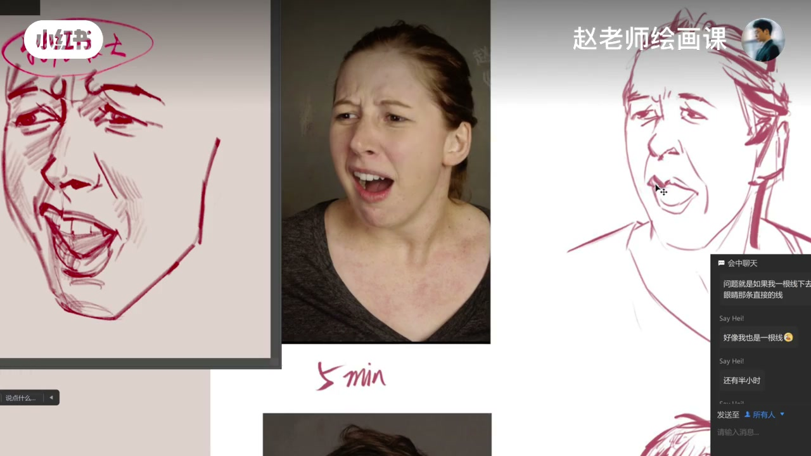

内容要点
赵吾象借助作业讲表情原则「特征放大」：在正确点位强化眼睛三角、川字纹、鼻与鼻孔尖三角、眉毛尖与嘴角高低，牙略大、下唇略厚——比原图更「炸裂」但仍收敛可控。生动表情靠两步：五官形状夸张，再在趋势上拉长（如嘴裂开线）；线条万能，不必迷信揉擦。作业对照显示抓住趋势才算摸到精髓。
知识结构
眼眉鼻嘴逐级夸张；正确点位带一点；比原图更强仍收敛。
变形可服务表现；趋势拉长嘴线；作业中间稿抓住精髓。
画活表情＝在正确结构点上做特征放大，再加强趋势（嘴角高低、裂开程度）；准不等于死扣比例，表现优先。
00:00-02:03特征放大：眼眉鼻嘴逐级夸张
借助作业讲表情：原则叫特征放大。示范强化左边人物眼睛的三角形；再夸张生气／皱眉时的川字纹；鼻子与鼻孔做成尖锐三角——结构线在正确点位稍微带一点就够。
继续夸张另一侧眼睛尖三角、眉上肌肉与眉毛尖（着急时眉毛能显性格）；嘴角左高右低则高的更高、低的更低，下唇加厚、上牙略画大并稍虚。完成对照：表情比原图更炸裂，示范仍偏收敛，怕夸张过度与课内知识脱节。00:13／00:50／01:50 构成证据。



02:03-04:55形状＋趋势：线亦万能；作业对照
看到了吗？是对特点夸张。有结构处可变形，不必处处死守比例——此时进入艺术表现。脸上调子用线也行，「线条是万能的」；他反感考前班式「揉擦」等词，自己是师徒传功路径。
表情处理＝夸张：先在五官形状上夸张，再在趋势上夸张——加强嘴裂开程度，让高低线趋势更强，牙更大。与作业比：嘴趋势弱下去就「清楚」地输了；中间稿把握住夸张精髓（更龇牙咧嘴）就对了。胡子形状圆了可另说，长短因人而异也是强化。收束再强调表情把握规律。03:40／04:12 可核。


完整转录（104段）
以下文本由 Whisper medium 模型自动转录，可能存在少量识别误差，已尽可能修正。
借助C黑这张作业啊 我们说一下这个表情啊
实际上有一个原则叫做特征放大
我现在给你们画一下左边这个人的表情
这个眼睛啊 我现在强化了他眼睛三角形的这种形状
是不是 夸张了他
然后再夸张这个东西 这是一块肌肉嘛 对吧
就是那个穿字纹 有人生气的时候
或者说皱眉的时候都会有这个东西叫穿字纹
这下来我还得夸张他这个鼻子是一个很尖锐的三角
我还想夸张他这个鼻孔的尖锐三角
你看这结构线就是你稍微带一点
你在正确的点位上带一点他就ok了
我现在画到这一步了啊
我还要夸张他这边这个眼睛尖尖的这个三角
我给他画的非常夸张 行不行
再夸张他这 这地方不是也有一块肌肉
眉毛要不要夸张 眉毛可以夸张他这个东西
就把他这个眉毛这个尖给他夸张出来
因为为什么 因为这个人不是着急了吗
那眉毛可能可以体现他的性格是不是
然后再夸张什么
再夸张让我想想夸张这个嘴吧
这个嘴是左边的嘴角上翘右边的嘴角下 下来
那我们把他这个嘴
让他这样行不行啊
高的再高低的再低
然后他下面这个也夸张一下
这下面这嘴唇也理的比较的夸张
上面这个牙我让他画大一点可不可以
里面稍微给他虚一点啊
先给他按下去啊 好这是他嘴唇
下面的嘴唇是好像厚一点是不是
那就厚一点 我给他再厚一点
我的妈呀这个人
这表情是不是比原图要来的更炸裂一些
我这做的还是比较收敛的
因为我还是希望你们能够能够能接受
要不然夸张太多就感觉和我们讲的东西衔接不上
看到这个表情是怎么画的了吗同学们
是不是对特点进行了夸张
这地方是有结构的
所以然后然后在这个时候会有一些
这个下巴画多了
会有一些什么就是会有一些变形
可能有的地方并不能够完全按照
我们所讲的比例啊结构去走
但是没有关系
这个时候就可以提到一些艺术表现了
然后我跟你讲
有的人就不知道脸上这个调子应该怎么画
你用线画的话就很麻烦
其实用线也没有问题啊
你看我这样画不是也行吗
线条是万能的同学们
我非常讨厌就是就是给你教什么揉擦的
我都我都没有听过这个词
在我的学习生涯我的绘画生涯当中
我都没有听过一次
因为我当时画画是我没有进过考前班
我是有一个老师专门教的我
类似于他的弟子
就是师父给你传功一样
所以很多词还有什么那个叫卡点
我都没有听过
可以了吧就是这意思到了大家能理解吗
我相信我示范的已经很具体了
这就是对表情的这种处理
就是一个夸张
就是说我们要画表情想要把它画得很生动
你首先在五官的形状上要进行夸张
第二个叫在趋势上进行夸张
我说的趋势趋势上夸张
就是我是不是加强了他嘴巴裂开这个程度
他本来这高这低
我让他他的这条线的趋势会更强
那底下是不是这么一个形状
他这两条线的趋势是不是又被我拉长了
然后我们能看到这个牙是不是比较大一点
OK我让这个牙更大
我会说你画的不准是吧
好呀我现在把我画的跟你比较去很好
咱们要说就说到底
我画的和你画的区别在哪里
就是我说这个嘴的趋势
你看这个嘴的趋势你这边肯定是弱下去了
这嘴就弱下去了
一比较是不是特别清纯
但是我觉得你中间这样画的非常好
中间这样你完全把握住了这个表情的夸张的精髓
就是我觉得你这个人画的啊
就是比图上这个人还要更更滋雅咧嘴
你这个话真好知道吧
画这张与原图比较一下
你中间这样就是把握住了我刚说的原理
刨去胡子这个形状
这个形状画的圆了
咱就不说长短
因为长短有有些人有的可能下巴长
有的可能下巴短
其实也是强化
上一课我们关于表情其实是说过的
我再额外的强化一下这个表情的这种把握
表情把握这样一种规律啊
希望大家能够掌握吧